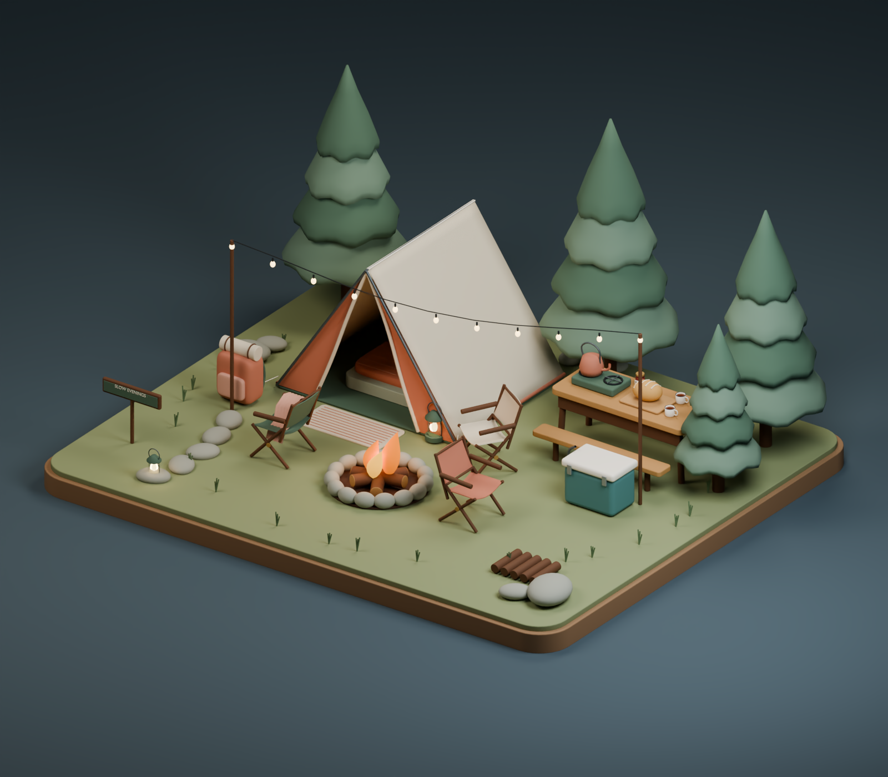
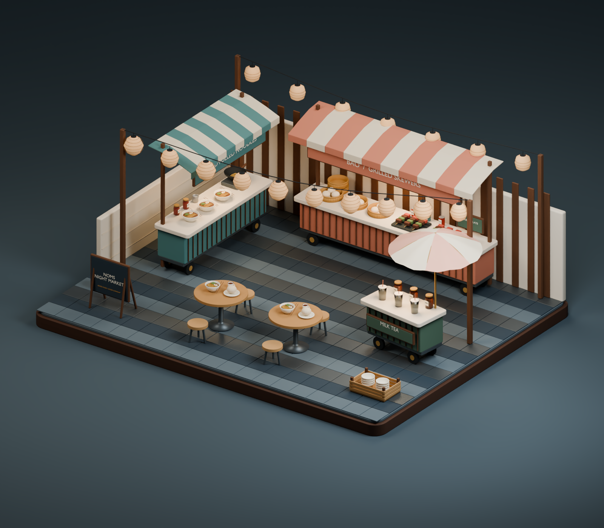
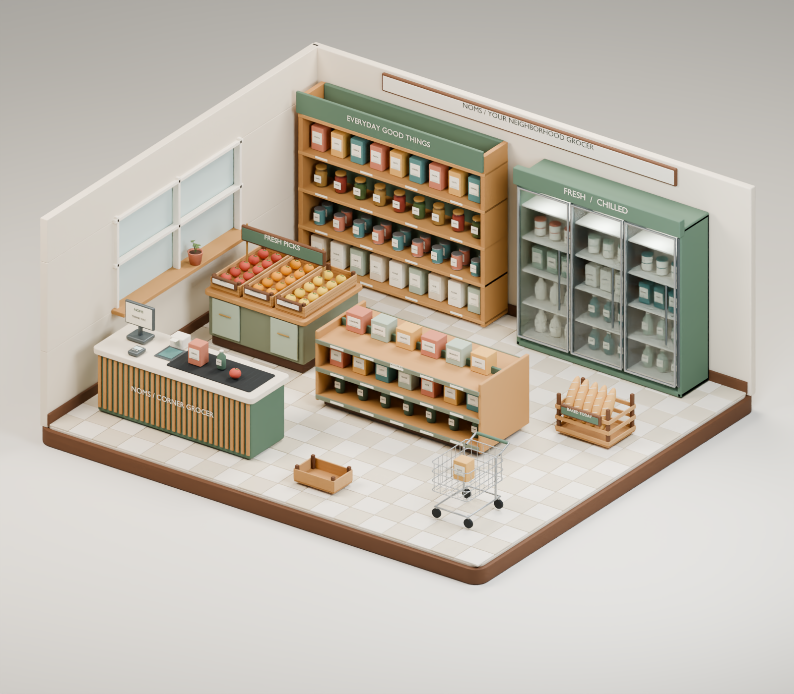

01Cozy campsiteA canvas tent, fireside chairs, camp kitchen and soft string lights beneath the pines.Blender masterGLB modelFull-size render ↗
02Night market courtyardNoodles, bao, skewers and milk tea around shared tables and glowing paper lanterns.Blender masterGLB modelFull-size render ↗
03Neighborhood grocerySeasonal produce, pantry staples, chilled drinks, fresh bread and a friendly corner checkout.Blender masterGLB modelFull-size render ↗